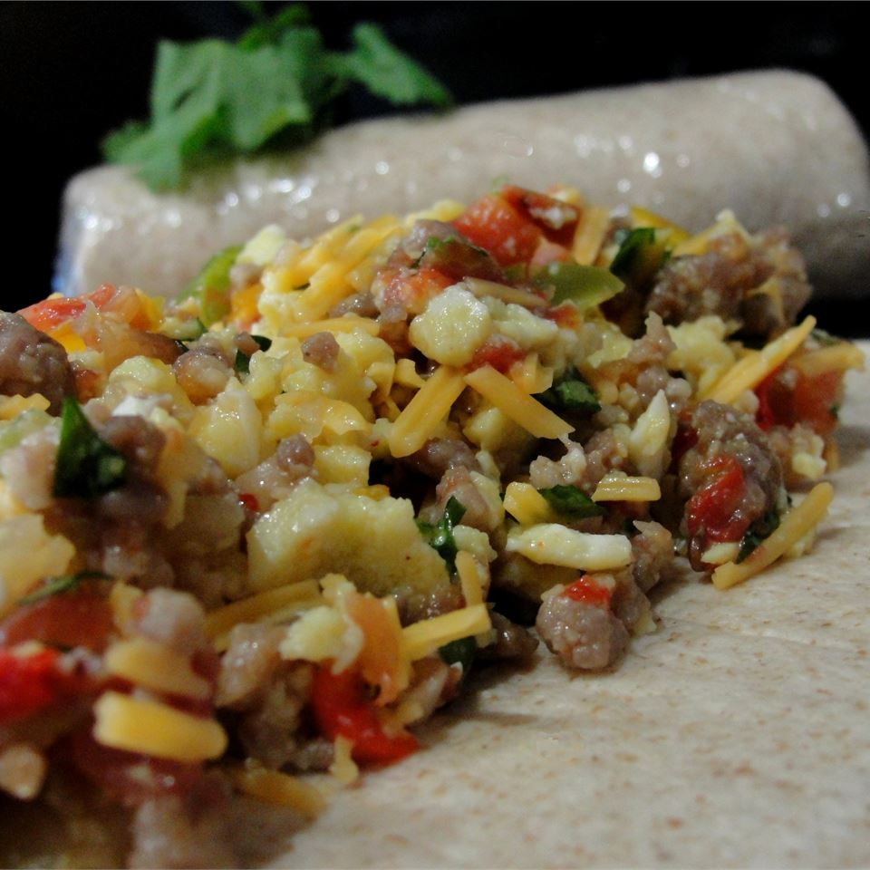

Southwest Breakfast Burritos

Description
Recipe for Southwest Breakfast Burritos
- Prep: 50 mins
- Cook: 15 mins
- Total: 1 hr, 5 mins
- Yield: 20 burritos
Ingredients
- 12 eggs
- ⅔ cup milk
- ½ teaspoon salt
- 2 tablespoons butter
- 1 pound pork sausage
- 2 tablespoons minced garlic
- ½ red onion, diced
- 1 tomato, diced
- 1 (1 ounce) package taco seasoning
- 1½ cups shredded cheese
- 20 (6 inch) flour tortillas
Steps
- Whisk together the eggs, milk, and salt in a large bowl. Heat butter in a large skillet over medium-high heat.
- Pour in the egg mixture; cook and stir until eggs are completely set, about 5 minutes. Chop the cooked eggs and place in a large bowl. Set aside.
- Heat a large skillet over medium heat and stir in the sausage and garlic. Cook and stir for 5 minutes, then add the onion. Continue cooking and stirring until the sausage is crumbly, evenly browned, and no longer pink.
- Drain and discard any excess grease. Combine the sausage with the eggs, tomato, and taco seasoning. Allow mixture to cool to room temperature, then stir in the cheese.
- Place a tortilla onto your work surface, then spoon some of the filling halfway between the bottom edge and the center of the tortilla. Flatten the filling into rectangle shape with the back of a spoon.
- Fold the bottom of the tortilla snugly over the filling, then fold in the left and right edges. Roll the burrito up to the top edge, forming a tight cylinder.
- Repeat with the remaining ingredients.
- Tightly wrap individual burritos with plastic wrap and freeze until ready to serve. Heat in the microwave until hot, 3 to 4 minutes, before serving.
Back
Recipe from Allrecipes.com